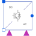
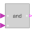
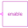
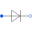

MultiPhase2LevelMulti phase DC to AC converter |

|
Diagram
{kind=link}
Information
This information is part of the Modelica Standard Library maintained by the Modelica Association.
This is a multi phase two level inverter. The boolean signals fire_p[k] and fire_n[k] for any phase k shall not be true at the same time to avoid DC bus short circuits. The inverter consists of 2*m transistors and two anti parallel free wheeling diodes, respectively, where m is the number of phases.
Parameters (10)
| useConstantEnable |
Value: true Type: Boolean Description: true = disabled boolean input, use constantEnable |
|---|---|
| constantEnable |
Value: true Type: Boolean Description: Constant enabling of firing signals |
| useHeatPort |
Value: false Type: Boolean Description: =true, if heatPort is enabled |
| T |
Value: 293.15 Type: Temperature (K) Description: Fixed device temperature if useHeatPort = false |
| RonTransistor |
Value: 1e-05 Type: Resistance (Ω) Description: Transistor closed resistance |
| GoffTransistor |
Value: 1e-05 Type: Conductance (S) Description: Transistor opened conductance |
| VkneeTransistor |
Value: 0 Type: Voltage (V) Description: Transistor threshold voltage |
| RonDiode |
Value: 1e-05 Type: Resistance (Ω) Description: Diode closed resistance |
| GoffDiode |
Value: 1e-05 Type: Conductance (S) Description: Diode opened conductance |
| VkneeDiode |
Value: 0 Type: Voltage (V) Description: Diode threshold voltage |
Connectors (7)
| fire_p |
Type: BooleanInput[m] Description: Firing signals of positive potential transistors |
|
|---|---|---|
| enable |
Type: BooleanInput Description: Enables fire and notFire |
|
| fire_n |
Type: BooleanInput[m] Description: Firing signals of negative potential transistors |
|
| dc_p |
Type: PositivePin Description: Positive DC input |
|
| dc_n |
Type: NegativePin Description: Negative DC input |
|
| ac |
Type: PositivePlug Description: AC output |
|
| heatPort |
Type: HeatPort_a Description: Conditional heat port |
Components (10)
|  | andCondition_p |
Type: And[m] Description: And condition for m positive firing signals |
|---|---|---|
|  | enableLogic |
Type: EnableLogic Description: Enabling logic |
| andCondition_n |
Type: And[m] Description: And condition for m negative firing signals |
|
| transistor_p |
Type: IdealGTOThyristor |
|
|  | diode_p |
Type: IdealDiode |
| star_p |
Type: Star |
|
| transistor_n |
Type: IdealGTOThyristor |
|
| diode_n |
Type: IdealDiode |
|
| star_n |
Type: Star |
|
| thermalCollector |
Type: ThermalCollector |
Used in Examples (4)
|
Modelica.Electrical.Machines.Examples.AsynchronousInductionMachines Test example: AsynchronousInductionMachineSquirrelCage inverter drive |
|
|
Modelica.Electrical.PowerConverters.Examples.DCAC.MultiPhaseTwoLevel Multi phase DC to AC converter with R load |
|
|
Modelica.Electrical.PowerConverters.Examples.DCAC.MultiPhaseTwoLevel Multi phase DC to AC converter with R-L load |
|
|
Modelica.Electrical.PowerConverters.Examples.DCAC.MultiPhaseTwoLevel Test of pulse width modulation methods |